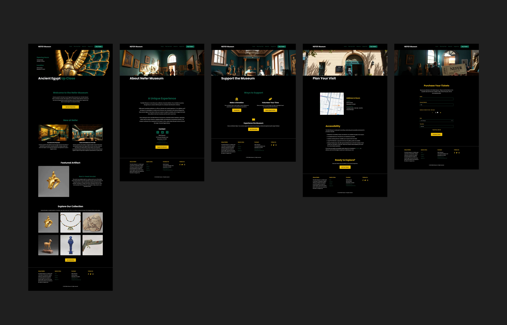

Project Overview
MY ROLE
UX/UI Designer & Frontend Developer
TIMELINE
4 Weeks
DELIVERABLES
UX Research, Responsive Website, Visual Design
The Strategic Foundation: Designing for a Diverse Audience
1. Evidence: User Personas
2. Evidence: The UX Blueprint
The Design & Iteration Process: From Wireframe to User-Tested Prototype
Before User Testing
After User Testing
The Final Product: An Immersive Experience
